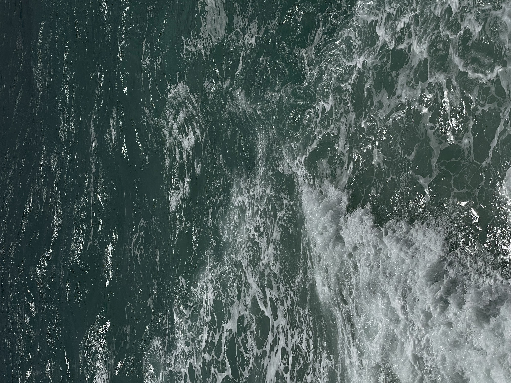

Sea Cavees


Ayia Napa Sea Caves is a cove which is riddled with small sea caves and some arcs. There is an almost horizontal layer of soft limestone, which is easily eroded by the waves. So the sea eroded this layer around the bay, while the overlying harder layer protected the caves from collapse. The lower layer is also harder and forms a several meters wide ledge. The layers are not completely horizontal, so the ledge is partly submerged. At one side of the cove the caves are partly submerged and it is possible to swim into the caves. On the other side the caves oben to the ledge, which is normally above sea level and dry.